← 返回阅读库 · 原论文目录
论文讲解阅读文档 · 表征学习 · v151
BYOL Bootstrap Your Own Latent[2006.07733]
视频时长 00:16:22；讲解文字 6,884 字符；提取讲解画面 71 张。按视频原顺序阅读，每段文字保留时间戳。
文字来自整段视频的自动语音转写，按自然停顿分段，并与 PPT / 论文页面 / 演示画面对齐。未将讲解压缩为摘要；术语、数字和口述公式请结合画面及原论文核对。 阅读稿已校正规范部分明确术语误识别；原始逐字稿和每处修改记录另行保留。
讲解画面为源视频截图（640×360），不是可编辑 PPT 文件。全片按每秒 2 帧扫描内容变化，逐步展开页保留；连续动画保留代表画面。清晰度受源视频限制。
下载完整资料包 · 含离线 HTML、PDF、Word、全部 PPT 画面和字幕。
原论文与材料
Bootstrap your own latent: A new approach to self-supervised Learning · 下载完整 PDF（35 页）
按时间阅读
00:00:00–00:00:23 · 画面 001
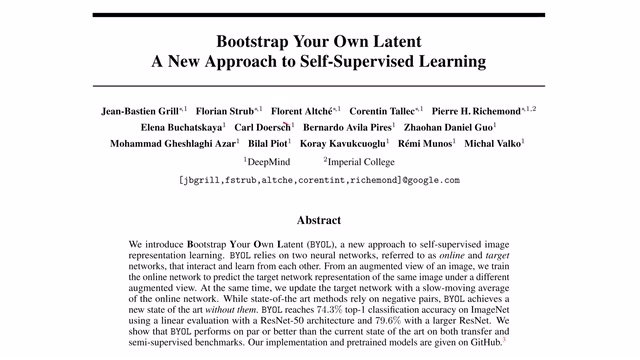
00:00:00–00:00:23 · 画面 001大家好,今天我们来介绍 BYOLBotstrap Your Own LatentA New Approach to Self-Supervised Learning 那么正如题目中所暗示的一样本文提出了一种新的方法来进行自监督学习也就是说通过自监督的方法学习一个好的 feature 或者 representation 来为我们下游的视觉任务提供一个良好的开始那么按照惯例我们还是首先介绍一下这篇文章的研究的意义在于什么
00:00:23–00:00:39 · 画面 002
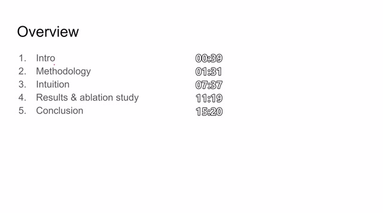
00:00:23–00:00:39 · 画面 002以他具体的方法以及为什么这种方法能 work。最后呢，也是作者汇报了非常多的实验结果，实验数据还有他们做的玻璃实验，以及最后我们得到一个结论。好的，我们来看为什么是要使用 self supervise 这个方法呢？因为啊，我们的模型呢，随着这个时代的发展已经变得越来越大
00:00:39–00:01:10 · 画面 003
00:00:39–00:01:10 · 画面 003那么需要训练它的数据也越来越大。像这个图显示的是一个 34 层的 ResNet 结构，可以看到它已经是非常庞大的，而且结构是非常复杂的那么随着模型的增大，伴随一些梯度消失或者梯度爆炸的情况，训练这个模型是越来越难的。同时，我们也需要大量的数据，大量标记过的数据来对它这整个模型进行监督学习。从这样来看，成本是逐渐增加的。因此，现在更多的人把目光投向了 self-supervised 或者是 unsupervised 方法，就是说能够以更低的样本的成本来去训练出一个好的模型，同时这个模型能够更加泛化
00:01:10–00:01:11 · 画面 004
00:01:10–00:01:11 · 画面 00400:01:11–00:01:23 · 画面 005
00:01:11–00:01:23 · 画面 00500:01:23–00:01:24 · 画面 006
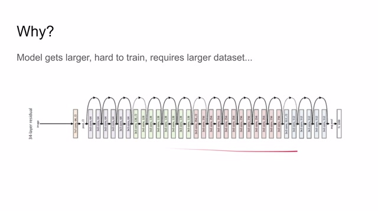
00:01:23–00:01:24 · 画面 00600:01:24–00:01:31 · 画面 007
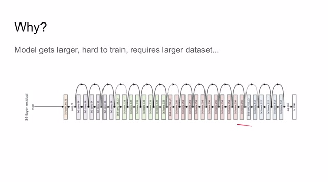
00:01:24–00:01:31 · 画面 007对于多种视觉任务呢都能有所帮助。那么我们就来看本文提出一种方法，那么本文的亮点呢在于，我们会同时维持两个相同的网络，比如这里的 theta，这里的 xi。那么这个 theta 我们称之为 online network，这个 xi 我们称为 target network。那么在训练的过程中呢，我们使 online network 不断的去逼近 target network，而这个 target network 呢也是使用 momentum 动量的方式
00:01:31–00:01:42 · 画面 008
00:01:31–00:01:42 · 画面 00800:01:42–00:01:43 · 画面 009
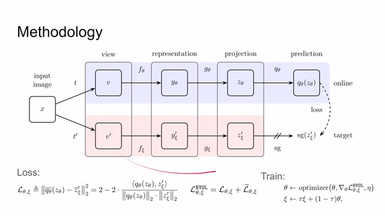
00:01:42–00:01:43 · 画面 00900:01:43–00:01:56 · 画面 010
00:01:43–00:01:56 · 画面 01000:01:56–00:02:03 · 画面 011
00:01:56–00:02:03 · 画面 011来更新自己的参数，去缓慢的向 online 靠拢。那么整个模型的训练就像左脚踩右脚一样，逐渐的把自己的性能提升起来。好的，那我们来看具体它的工作的流程。对付输入的图像 X，我们对它进行随机的两种的图像增强策略，比如这里的 T 和 T'同一张图像我们就会得到两幅增强过的图像，一个是 V，一个是 V'把 V 送入 online network
00:02:03–00:02:07 · 画面 012
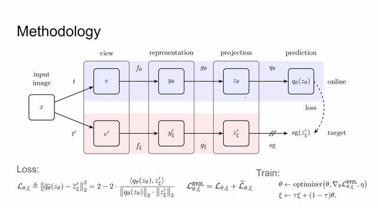
00:02:03–00:02:07 · 画面 01200:02:07–00:02:09 · 画面 013
00:02:07–00:02:09 · 画面 01300:02:09–00:02:10 · 画面 014
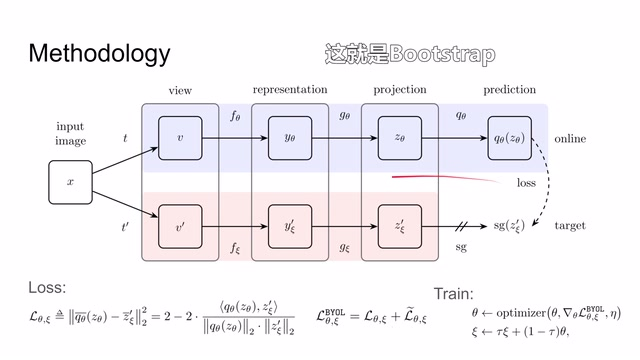
00:02:09–00:02:10 · 画面 01400:02:10–00:03:32 · 画面 015
00:02:10–00:03:32 · 画面 015这里的 f 呢就是我们常见的一扣的考读上的 neural network，比如说 resnet 50 这样子的网络，它会得到一个 y ，我们叫 representations，也就是我们最终会使用的图像中提取的 feature。我用这个 representation 来描述这个 view。那么在此之上呢，我们会把这个 y 再投入到一个 g 里面，这个 g 呢会把我们的这一个 y由 feature space 投入到一个更高维的 latent space。那么我们这里称之为 Zθ。这一步的结果呢叫做 projection。好，那么我们这一只呢先看到这里，我们再看下面这只 target network
x 经过 t prime 这个增强之后得到一个 v prime 这个新的图像，这个新的图像呢我们也送到一个 encoder。这个 encoder 结构呢跟上面的 online network 的结构是一样的，但是参数是不同的。上面我们是使用 zeta，这里使用是 kz。那么这个 f 经过 f kz 之后呢，我们也得到一个新的 representation，关于这个 v prime 的 representation 我们称之为 y kz 的 prime。那么同样的，我们把这个 y kz 的 prime 呢
00:03:32–00:03:33 · 画面 016
00:03:32–00:03:33 · 画面 01600:03:33–00:04:29 · 画面 017
00:03:33–00:04:29 · 画面 017也扔到这个 Latent Space 里面，更高维的 Latent Space 里面。我们把这个网络叫做 ZigZied。那么跟这个上面的 G Theta 也是一样的，这个网络结构只是参数不一样。那么最后呢，我们得到这个 ZigZied Prime，我们也称也是一种 Projection。好，那么关键来了，我们要怎么样这两只网络产生联系呢这里呢在 online network 里面我们还多了几层这个网络的结构我们叫做 qθ通过 qθ应用到这个 zθ上我们想要使得这个 prediction 也就是 zθ输入进这个 qθ之后得到的这个值来靠近这个 zx i 的 prime 我们希望 online network 的 projection 在这个 latent space 里面能够向 target network 的这个 prediction 靠拢
00:04:29–00:04:36 · 画面 018
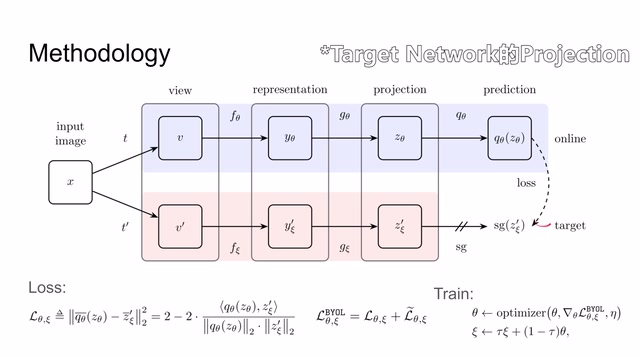
00:04:29–00:04:36 · 画面 018那么通过什么样的方式靠拢呢就是通过送到这个网络里的方式来进行靠拢这样子呢使得这个 online network 不断的去向这个 target network 逼近注意看这里有一个 SG 的标志就是 stop gradient 停止梯度的传播也就是说在得到这个 loss 之后我们只是在训练 online network 我们并没有在训练 target network
00:04:36–00:04:55 · 画面 019
00:04:36–00:04:55 · 画面 019而 Target Network 也不是一成不变的那么它也是按照动量的方式缓慢的向 Online Network 靠拢但是它们两个是永远不会达到相同的参数的 OK 那么然后我们来看怎么样具体构建这个 Loss 那么这里的 Loss 其实非常简单就是两个皈依化之后的 Vector 它们的 MSE 那么打开来看其实就是这两个向量它们之间的夹角我们希望这两个向量越接近越好
00:04:55–00:04:58 · 画面 020
00:04:55–00:04:58 · 画面 02000:04:58–00:05:01 · 画面 021
00:04:58–00:05:01 · 画面 02100:05:01–00:05:06 · 画面 022
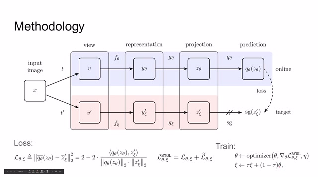
00:05:01–00:05:06 · 画面 02200:05:06–00:05:07 · 画面 023
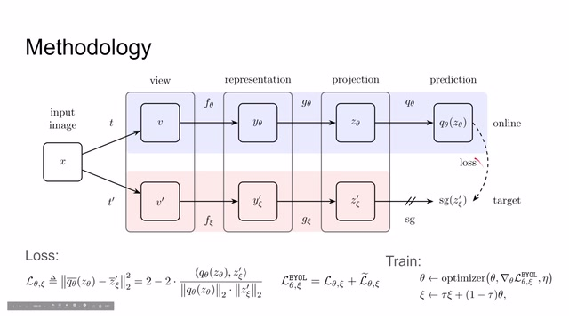
00:05:06–00:05:07 · 画面 02300:05:07–00:05:08 · 画面 024
00:05:07–00:05:08 · 画面 02400:05:08–00:05:16 · 画面 025
00:05:08–00:05:16 · 画面 02500:05:16–00:05:19 · 画面 026
00:05:16–00:05:19 · 画面 02600:05:19–00:05:23 · 画面 027
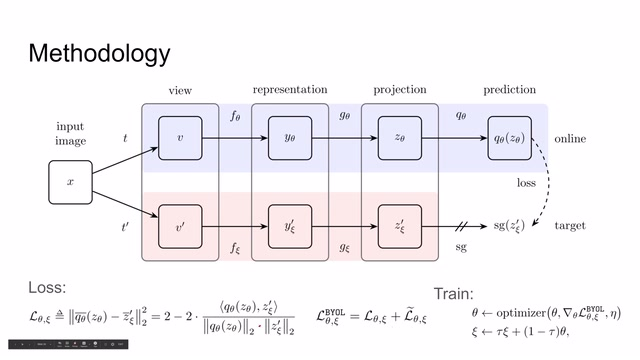
00:05:19–00:05:23 · 画面 027那么当然在实际的训练中我们既然有了 V 和 V'都产生了这两幅补图的图像了这个不用白不用对吧我们除了第一次要把 V 送入 online networkV'送入 target network 之外我们还会进行一次反转也就是说把 V'送到 online network 把 V 送到 target network 这样子我们会得到另一个 loss
00:05:23–00:05:24 · 画面 028
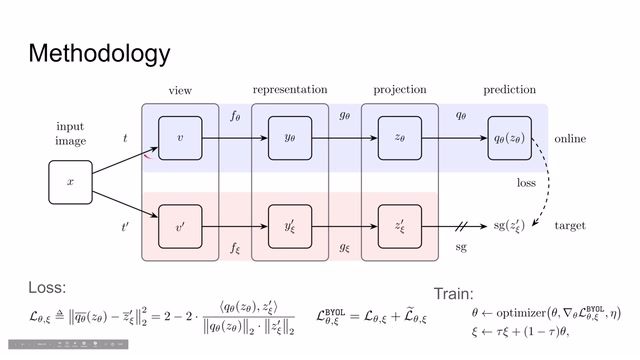
00:05:23–00:05:24 · 画面 02800:05:24–00:05:33 · 画面 029
00:05:24–00:05:33 · 画面 02900:05:33–00:05:34 · 画面 030
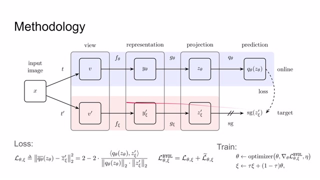
00:05:33–00:05:34 · 画面 03000:05:34–00:05:41 · 画面 031
00:05:34–00:05:41 · 画面 03100:05:41–00:05:49 · 画面 032
00:05:41–00:05:49 · 画面 032那么把这两个 loss 加起来就是我们这个 BYOL 的 loss 那么使用这个 loss 呢只对这个 theta 这个网络也就是 online network 的网络进行训练那么最后呢根据训练出的 theta 再更新这个 target network 这就是整个 BYOL 网络的核心的思想那么回到它的具体实现既然整个这一个论文提出的是一个训练的框架或者说是构建 self-supervised 的这么一个方法
00:05:49–00:05:50 · 画面 033
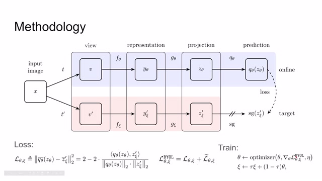
00:05:49–00:05:50 · 画面 03300:05:50–00:05:57 · 画面 034
00:05:50–00:05:57 · 画面 03400:05:57–00:05:58 · 画面 035
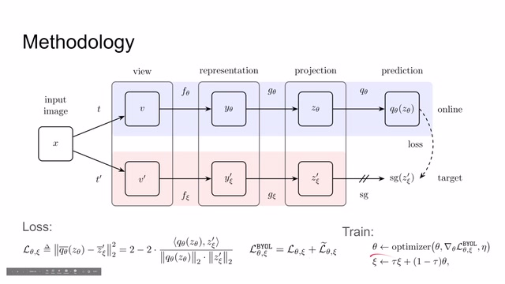
00:05:57–00:05:58 · 画面 03500:05:58–00:06:01 · 画面 036
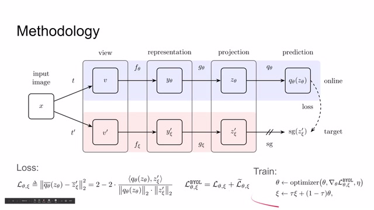
00:05:58–00:06:01 · 画面 03600:06:01–00:06:05 · 画面 037
00:06:01–00:06:05 · 画面 03700:06:05–00:06:07 · 画面 038
00:06:05–00:06:07 · 画面 03800:06:07–00:06:25 · 画面 039
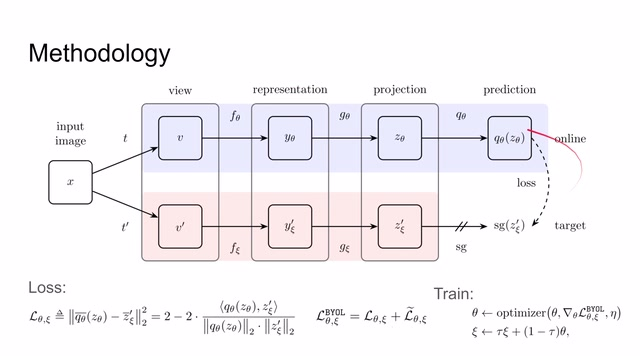
00:06:07–00:06:25 · 画面 039那么其实它具体的网络结构这里的 F 就不局限于任何一种 encoder 了比如我不想使用 ResNet 想使用 ResNet 想使用 VGG 其实都是可以的这里是作者提供的伪代码我们可以看到这里我们有原始图像 distribution 这里的 T 和 T'就是随机的两种图像增强的策略我们有 theta online networkbookside 是
00:06:25–00:06:27 · 画面 040
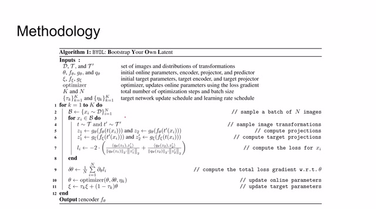
00:06:25–00:06:27 · 画面 04000:06:27–00:06:29 · 画面 041
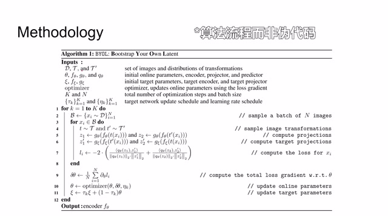
00:06:27–00:06:29 · 画面 04100:06:29–00:07:09 · 画面 042
00:06:29–00:07:09 · 画面 042这个 target network ok 那么当开始训练的时候首先也是采样出一个 batch x 呢就是 batch 中的样本对吧对对每一个样本呢我们进行了这个 t 或者是 t prime 的这个增强像这一步呢是把他们都投入到 online network 里面进行 projection 那么下一步呢是把他们投入到 target network 里面来进行 projection 那么两个 projection 之间呢就可以构建 loss 了我们把这个 online network 的结果送到这个 predictor 里面来对比一下他们的 loss 有了这个 loss 呢我们就可以对 online network 进行训练训练完 online network 之后呢我们再对 target network 进行更新那么这样呢就是一轮训练的过程那么最后呢我们会得到一个强的好的 online encoder 也就是这个 f zeta 这个呢也是我们整个算法最终需要的东西
00:07:09–00:07:10 · 画面 043
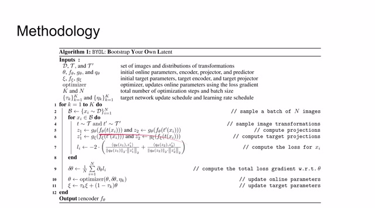
00:07:09–00:07:10 · 画面 04300:07:10–00:07:15 · 画面 044
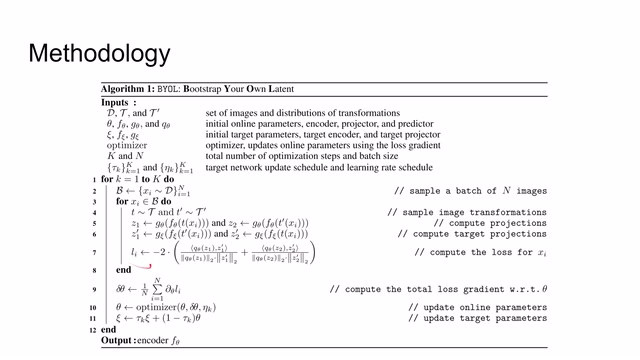
00:07:10–00:07:15 · 画面 04400:07:15–00:07:16 · 画面 045
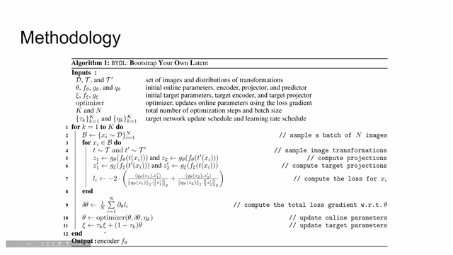
00:07:15–00:07:16 · 画面 04500:07:16–00:07:27 · 画面 046
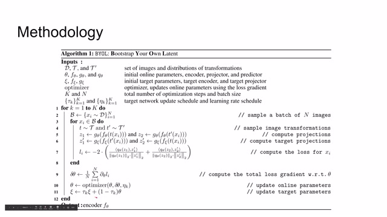
00:07:16–00:07:27 · 画面 046我们通过这种手段使得 RFZ 学得一个好的强的 representation 用来便于我们下游的计算机视觉的任务的开展那么为什么这种方法它没有使用负样本没有使用 contrastive loss 这种东西它依然可以避免模型的坍塌最终能够 work 呢那么这里我们结合作者提供的流程图再梳理一遍这个算法的过程
00:07:27–00:07:30 · 画面 047
00:07:27–00:07:30 · 画面 04700:07:30–00:07:33 · 画面 048
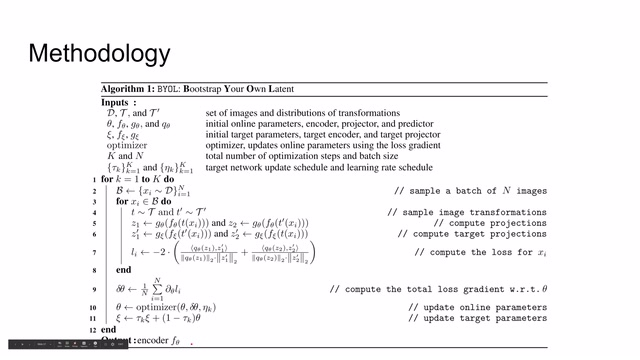
00:07:30–00:07:33 · 画面 04800:07:33–00:07:37 · 画面 049
00:07:33–00:07:37 · 画面 04900:07:37–00:07:38 · 画面 050
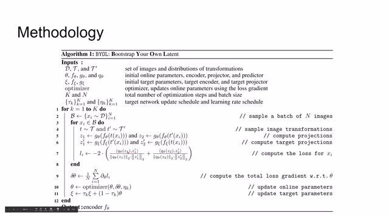
00:07:37–00:07:38 · 画面 05000:07:38–00:07:44 · 画面 051
00:07:38–00:07:44 · 画面 05100:07:44–00:07:45 · 画面 052
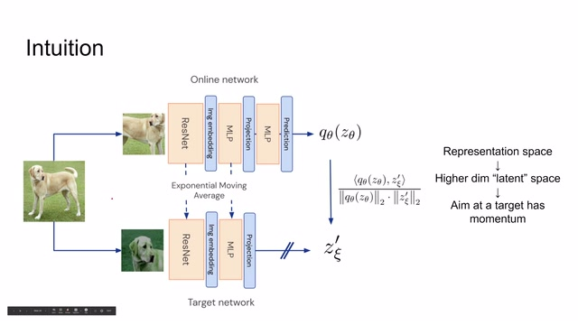
00:07:44–00:07:45 · 画面 05200:07:45–00:09:43 · 画面 053
00:07:45–00:09:43 · 画面 053首先看到一张图像进来，它进行了两种不同的图像增强策略。那么通过比如说这里使用的是 ResNet 来得到一种图像 image embedding，也就是我们常说的 Representation 或者叫 Feature。那么在这里我们相当于把图像投入到 Representation Space 或者我们叫 Feature Space。那么在这个 Space 里面，图像是由每一个 Dimension 的值来描述的。但是如果我们同样在这个 Representation Space 中观察两幅图像，那么它们之间的相互关系
其实是并不明显的。因此我们要再使用一串神经网络把它们投影到一个更高维的 latent space 里面。那么在这个 latent space 里面，我们希望两幅图像的投影 projection，那么在这个高维的空间里面，它也就是一个高维的 vector，它也就是两个高维的 vector，也就是两个高维空间中的点。我们要希望它们两个之间的距离或者说它们两个之间的空间关系能够承载一定的关系，能够通过他们两个点之间的距离的手段来表达这两幅图像的相对关系。但是呢毕竟我们是图像呢是使用两种不同的增强策略也使用了不同的两个网络来给它投影到空间中的他们两个呢
虽然就是他们两个投影虽然来自同一张图像，那么也不可能做到是在这个 projection 的空间中的完全相同的位置。那么怎么办呢，我们使用这个 MLP。那么怎么办呢，我们在这里再加几层这个神经网络用来把 online network 的 projection 来给它投影到或者说是要预测到这个 target network 的 projection 里面。相当于我们在 latent space 里面把一个 vector 移动的向另一个 vector 来推。那么为了能够达成这样的效果，使得这两个 vector 在 latent space 中相互靠近，我们的整个网络结构必须能够很好的克服这些图像增强对图像带来的影响，能够准确的把这一幅图像衍生出来的两个图像
00:09:43–00:09:44 · 画面 054
00:09:43–00:09:44 · 画面 05400:09:44–00:11:08 · 画面 055
00:09:44–00:11:08 · 画面 055把能够准确的把这一幅图像衍生出来的两个图像给它聚集靠拢在一起。这样子呢也就强迫了这个这样子也就强迫了这个 network 和 encoder 去学习出一个好的表达，一个语义上更加高级的表达去来描述这一幅图像。而且我们在训练这个网络的时候呢是使这个 online network 向这个 target network 靠拢，这个 target network 呢是一种过去的 online network，但是它又没有完全的跟上这个 online network那么这也就导致了无论你怎样训练这个模型，其实都不能使这个 Loss 满意。那么作者也说这个形式也非常像干这个模型，他们有两个 Network 在进行对抗，始终无法得到这个始终无法把这个 Loss 降下来。那么这里也是相似的。另外，如果有熟悉注意力机制 Attention Mechanism 的朋友也可以想到，其实这个 Higher Dimension Latent Space 其实跟 Attention 它承载的内容是非常接近的
都是在一个 latest space 里面，通过他们之间的相互的距离来表达这个图像之间的关系。虽然回过头来看它可能是一个左脚踩右脚相互依赖的过程，但是呢它确实能够像干一样实现一个不错的结果。那么下面我们来看这个实验的结果，因为本文学习的是一种 representations，要怎样证明我们学到的 representation 是一个好的 representation 呢，这里呢作者使用了
00:11:08–00:11:09 · 画面 056
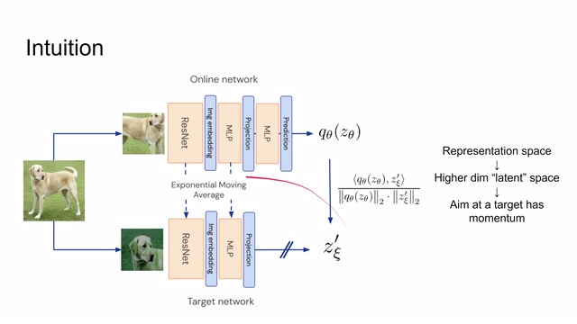
00:11:08–00:11:09 · 画面 05600:11:09–00:11:19 · 画面 057
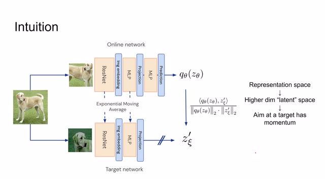
00:11:09–00:11:19 · 画面 05700:11:19–00:12:03 · 画面 058
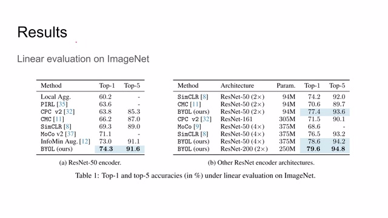
00:11:19–00:12:03 · 画面 058四种评价方法，第一种呢就是 linear evaluation，就是说当我学习到了一个 representation 之后，我把前面的这些 encoder 都固定住，那么我在后面再加上一层 linear layer，就是常见的这个线性层也就是全连接层，我们直接来进行这个 image net 这个预测，可以看到呢本来提出方法是比上面这些 self-supervised 方法都要好的，那么哪怕更换不同的不同结构的 encoder 都可以比前面的这些方法做得要好。那么这里作者还对比了使用自监督的方法和有监督的方法在不同参数数量下的模型的表现。这里绿色的点是原始的这些有监督的学习的方法，他们汇报出来的结果。那么因为本文中使用了不同的图像增强策略
00:12:03–00:12:41 · 画面 059
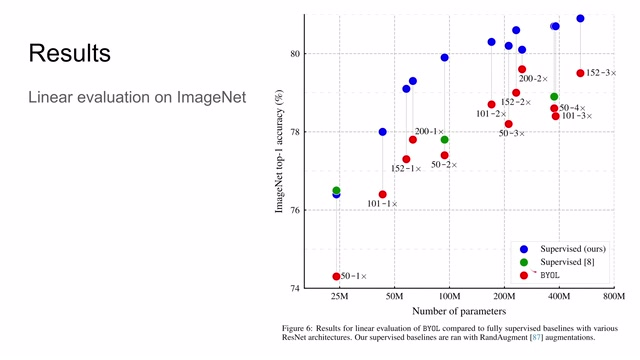
00:12:03–00:12:41 · 画面 059为了公平起见，作者使用了跟本文一样的互相增强策略来训练这些有监督的网络。那么当然有监督的网络它的表现肯定是要比这种 self-supervised 没有针对特定任务进行训练的网络的结果是要好的。但是我们可以看到在相同的参数数量下，这两种网络的性能是非常接近的。我们再看第二个苹果方法叫做半监督的训练
00:12:41–00:13:07 · 画面 060
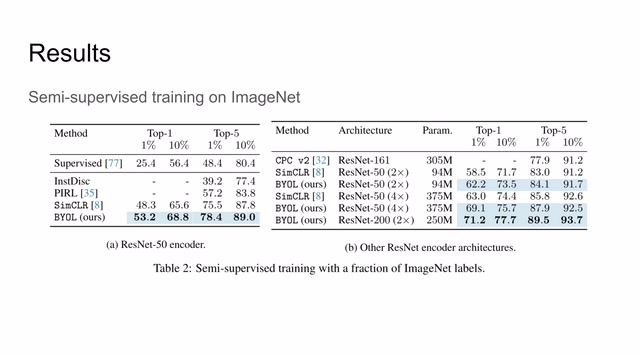
00:12:41–00:13:07 · 画面 060那么半渐度就是我们在训练一个训练完 representation 之后，在后面加上几层 linear layer，但是并不锁定前面的一个 coder。也就是说在我们先是 self-supervised 之后得到一个 representation，然后我们给它一部分 training set 中的 label，对整个网络进行微调。那么得到结果来看，也是本文提出的方法也是 outperform 其他的方法
00:13:07–00:13:08 · 画面 061
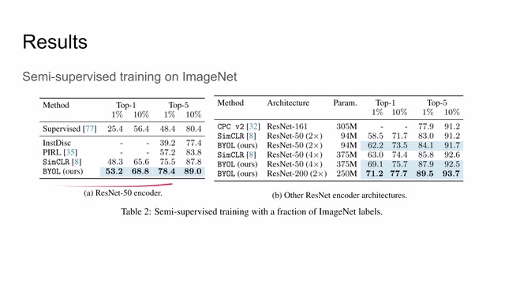
00:13:07–00:13:08 · 画面 06100:13:08–00:13:12 · 画面 062
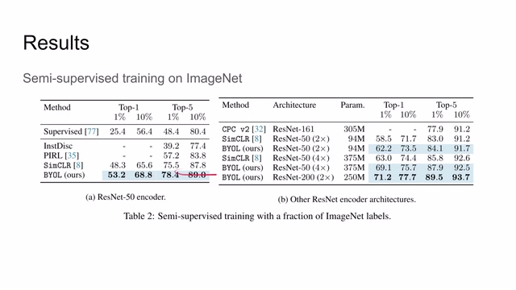
00:13:08–00:13:12 · 画面 06200:13:12–00:13:19 · 画面 063
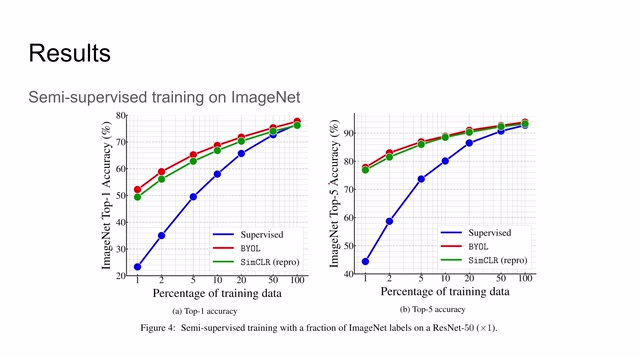
00:13:12–00:13:19 · 画面 063那么这张图就可以非常明显的体现出 self-supervised 对于整个工业界它的意义在于，我们可以看到它这里的横轴是使用的 training data 的百分比。对于有监督的这些方法，它们在训练样本数量非常少的时候性能其实是很糟糕的，相对于这种无监督的方法性能是很糟糕的，而且
00:13:19–00:13:20 · 画面 064
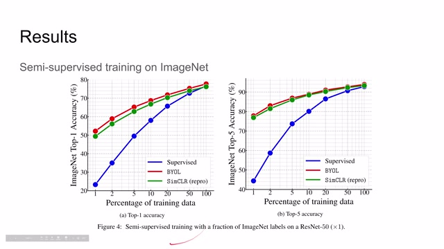
00:13:19–00:13:20 · 画面 06400:13:20–00:13:24 · 画面 065
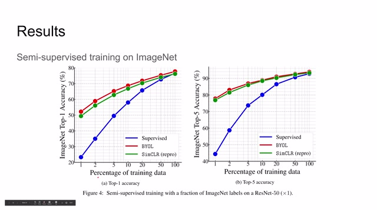
00:13:20–00:13:24 · 画面 06500:13:24–00:13:57 · 画面 066
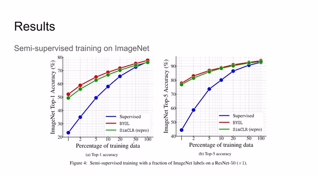
00:13:24–00:13:57 · 画面 066即便是给到了所有的这个样本，那么经过微调的无监督的方法呢，依然可以达到比有监督方法更高的准确率。也就是说通过自监督学习出来的 representation 学习出来的 feature 可以更好的表达图像，只要设下微调呢就可以超过这个有监督的方法。那么这个结果呢非常令人满意的，对外呢作者还做了一些迁移学习的这么一些实验，那么都在论文里面，有兴趣的朋友呢可以自行查看
00:13:57–00:13:58 · 画面 067
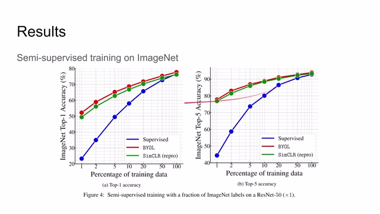
00:13:57–00:13:58 · 画面 06700:13:58–00:14:07 · 画面 068
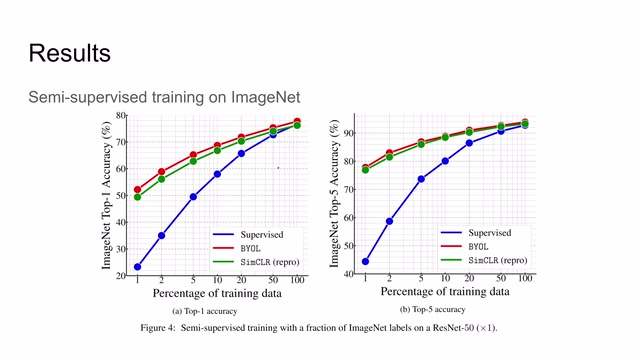
00:13:58–00:14:07 · 画面 06800:14:07–00:15:19 · 画面 069
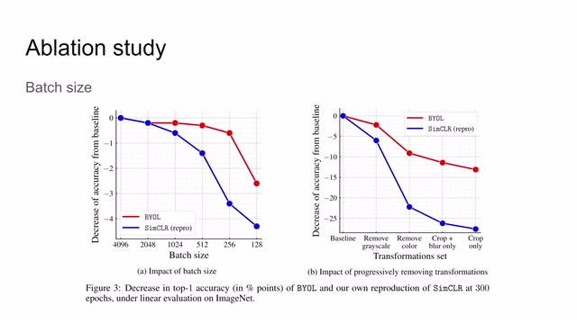
00:14:07–00:15:19 · 画面 069那么此外呢作者还汇报了很多玻璃实验的内容这里呢我们选一个比较有代表性的这个 Batch Size 也就是说改变也就是改变改变训练时使用的 Batch 的大小那么这里对比的是 SimCLR 因为 SimCLR 它使用的是 Contrastive Learning 对比学习的策略那么它是有那个 Negative Samples 的所以呢它就对这个 Batch Size 非常敏感而我们使用的 BYOL 呢它因为没有使用 negative sample，所以它就变得不那么敏感。这也是本文提出的方法优势之一。那么此外作者还尝试了比如说我使用一个 randomized，我们使用一个随机的 target network 作为目标，而且这个 target network 是不跟随 online network 来进行更新的
那么作者发现，即便如此这个网络还是能够学到那么一点点东西，比 random guess 要好很多。同时作者也尝试了把 target network 的梯度保留下来，如果不停止它的梯度，那么发现结果就会变得差很多。所以也就是说停止 target network 的梯度的传递也是非常关键的。这些详细的内容大家都可以在论文的附录中找到。那么总结来看，BYOL 是使用 online network
00:15:19–00:16:16 · 画面 070
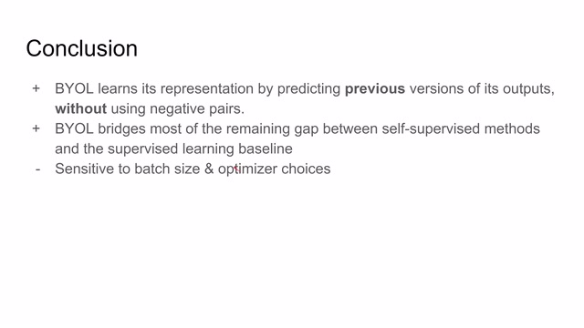
00:15:19–00:16:16 · 画面 070向这个过去的自己，也就是向过去的自己，也就是 target network 来推动，而并不使用这些负样本，能达到了相对不错的成绩。而且我们看到在 linear evaluation 里面，它的性能的表现是非常接近于 supervised 的方法的，而且甚至在 fine-tune 了之后呢是完全超过了 supervised 的方法的。可以说本论文的效果呢是非常好的，但是呢同时呢也有人指出说这个 BYOL 呢也是不可避免的它对于这个 batch size 甚至是选择 optimizer 的类型呢是有一些敏感的也就是说你需要多少是不同的 batch size 不同的 optimizer 来获得最好的成果那么总的来说呢这篇文章贡献了一种经典的而且行之有效 self-supervised 的方法而且作者提供的实验是非常详尽的欢迎大家呢去原始的论文查看好的以上呢就是我对这篇论文的简析感谢您的收看再见
00:16:16–00:16:22 · 画面 071
00:16:16–00:16:22 · 画面 071转写与来源说明 · 0 个自动复核提示
保留 38 个原始语音片段，0 个片段触发自动复核提示。提示仅用于定位可能的术语、重复或识别问题，不等于已确认错误。
讲解画面为源视频截图（640×360），不是可编辑 PPT 文件。全片按每秒 2 帧扫描内容变化，逐步展开页保留；连续动画保留代表画面。清晰度受源视频限制。
原视频：paper/合集_2026-10-16_表征学习/[论文简析]BYOL Bootstrap Your Own Latent[2006.07733].mp4
SHA-256：07d478ab284e264264af80cc859d9e62661aafd9c0dad4ca2cf7be4aebfddbc3
全文按视频语音与画面制作。原论文可从上方链接下载；完整资料包保留全文、原始逐字稿、字幕和校对记录。